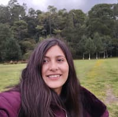

Gisselle Maxil Leon | WDD 130
Hi, my name is Gisselle. My friends call me Gissi. I am 24 years old, and I live with my family in Cholula, Puebla, Mexico. There are five people in my family. I love learning about programming. I like dancing, singing, and cooking. I love swimming and reading. I love my family with all my heart. At the moment, I work at a call center, and I am still learning English. I served a mission in the Mexico Chihuahua Mission, and I am a happy member of The Church of Jesus Christ of Latter-day Saints.